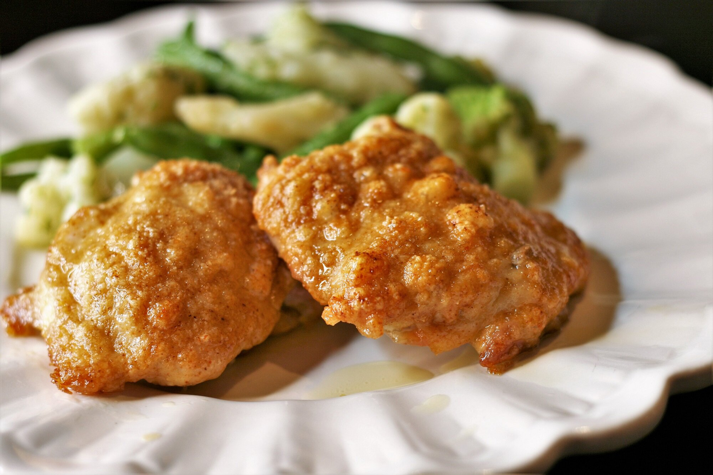

Simple baked parmesan chicken

Description
Baked chicken dipped into olive oil, and coated with a melted Parmesan cheese, spice and herb mixture.
Ingredients
- ⅓ cup olive oil
- 1 cup grated Parmesan cheese
- 1 teaspoon celery salt
- 1 teaspoon cayenne pepper
- ½ teaspoon garlic powder
- 8 (5 ounce) boneless, skinless chicken thighs
Steps
- Preheat the oven to 375 degrees F (190 degrees C).
- Line a jelly roll pan with foil.
- Put olive oil in a shallow bowl.
- Mix together Parmesan cheese, celery salt, cayenne pepper, and garlic powder in another shallow bowl.
- Cut chicken thighs in half.
- Dip chicken pieces in olive oil so both sides are covered, then press one side in the Parmesan mixture until coated.
- Place on the prepared pan with the coating facing up.
- Bake in the preheated oven until chicken is no longer pink in the center and the juices run clear, about 25 minutes.
- An instant-read thermometer inserted into the center should read at least 165 degrees F (74 degrees C).